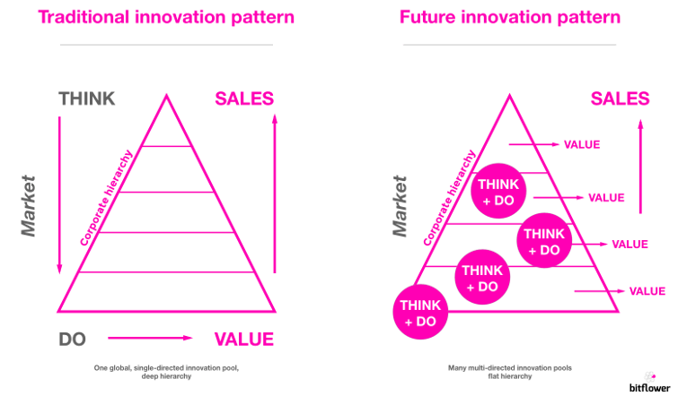

Blog
IoT is a cultural shift, not a technical one
Matthias Max 28/03/2017 Business models, Internet of Things
The current state of IoT is as diverse as it can get - and at the same time, this makes one thing clearer than ever: people must be at the center of its development. They must be empowered to use IoT in order to achieve their respective goals.
Attending this years (massive!) manufacturing hackathon at Bosch ConnectedExperience gave me a very clear insight into where we stand in terms of the promises made by IoT leaders. These include 'zero distance to user,' disruptive business models, transparency, and new sales channels.
But more importantly, it gave me a chance to test a top-to-bottom approach on modeling a sales strategy I had in mind. Being a 33/33/33 tech/business/design chameleon myself, this was an exciting journey!
The approach
The sales idea was to establish a sticker on product packaging - the 'QualityDot' - that lets consumers see how their individual product scores on production metrics. OEMs would get new tools for sales by customer segmentation. For example, they could sell 'B class' quality at a discount to customers who don't care about, let's say, a little scratch on the back of their new tablet (with the inner parts being intact). This would result in less waste, prevent grey markets, and strengthen customer confidence.
This use case is literally like looking through the price tag with a magnifying glass down to the very moment the product was manufactured in the factory.
The chance
This seems to be the true opportunity offered by IoT: connecting the separate pools of skills and access levels to create greater company-wide innovation potential and build something of more value:

This is where technology takes effect. IoT products from Bosch, General Electric, AWS - to name but a few - do the heavy lifting for us. With IoT gateways, application platforms, new sensors and actors, and micro-computers, they provide us with the tools to operate innovation seeding to an unprecedented extent .
People usually located far away from "the tech" get the chance to try their business ideas in small teams by implementing real prototypes (yes, without PowerPoint!). It’s kind of like a shortcut to the physical world. Conversely, people working on the hardware at the very end of the technology stack might have business ideas they want to try.
This means startup mentality at your fingertips: build fast, fail early, learn, or ship!